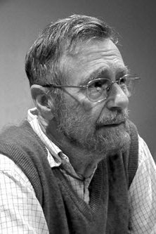

|  |
1972 год Edsger W. Dijkstra (1930–2000) «За подход к программированию как к интеллектуальной задаче; за требования и практическую демонстрацию того, что программы должны быть правильно составлены, а не отлаживаться до тех пор, пока не станут правильными; за ясное понимание проблем лежащих в основе программирования» |
Страна: Королевство Нидерландов
Образование: Доктор философии в области физики, Лейденский университет, 1956
О лауреате
Лауреату принадлежит значительный вклад в разработку языка АЛГОЛ в конце 1950-х годов, ставшего воплощением ясности и математической строгости. Он один из ярчайших представителей науки и искусства языков программирования во всей их общности, а также человек во многом способствовавший пониманию их структуры, представления и реализации. Его публикации охватывают широкий спектр тем: от теоретических статей по теории графов до базовых руководств, описаний и философских размышлений в области языков программирования. Среди его достижений один из первых трансляторов Алгола-60, семафоры, мультипрограммная операционная система THE, фундаментальные алгоритмы, структурное программирование.
Ключевые слова: Dijkstra’s algorithm, Structured programming, Semaphore, THE (OS), Multithreaded programming, Concurrent programming, Principles of distributed programming, Call stack, Fault-tolerant systems, Software architecture
Краткая библиография
| 1. |
Dahl, O.J., E.W. Dijkstra, and C.A.R. Hoare, Structured Programming, Academic Press, 1972. Включает в себя публикацию “Notes on Structured Programming,” очень влиятельную статью о задачах написания больших программ. |
| 2. |
Dijkstra, Edsger W., Communication with an Automatic Computer, PhD thesis, University of Amsterdam, 1959. Работа обращается к повсеместной в разработке операционных систем проблеме «прерываний в реальном времени». В ней обсуждаются методы буферизации, для связи между устройствами, скорости которых отличаются на несколько порядков. |
| 3. |
Dijkstra, Edsger W., “Recursive programming,” Numerische Mathematik 2, 1960, pp. 312–318 Статья вводит понятие «стек» для трансляции рекурсивных программ. |
| 4. |
Dijkstra, Edsger W., “Go To statement considered harmful,” Communications of the ACM, Vol. 11, Num. 3, 1968, pp. 147–148. Письмо редактору, положившее начало известному спору о “Go To”. Отправлено под заголовком “A case against the GO TO statement.” |
| 5. |
Dijkstra, Edsger W., “Guarded commands, nondeterminacy, and the formal derivation of programs,” Communications of the ACM, Vol. 18, Num. 8, 1975, pp. 453–457. Важная веха в превращении программирования в математическую дисциплину. В этой статье представлена методология для разработки программ и проверки их корректности. |
| 6. |
Dijkstra, Edsger W. and C.S. Scholten, Predicate Calculus and Program Semantics, Texts and Monographs in Computer Science. Springer-Verlag, 1989. Эта монография является окончательной публикацией теории предикатных преобразователей для определения семантики операторов языка программирования, как основы для получения программ путём вычислений их формальных спецификаций. |